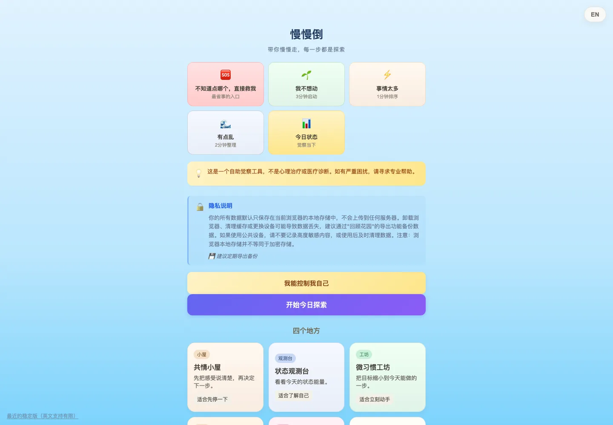

In Use · Stable / Maintenance在用 · 稳定维护
IslandSlowlyFall / 慢慢倒
Reflection & small next steps · 日常反思与下一小步
事情太多、能量太低时，找到当下能做的一小步。本地优先的日常记录与反思工具，结合微习惯和优先级决策；已由作者实际使用，核心流程稳定，进入维护。
Find a manageable next step when energy is low or tasks pile up. Daily reflection, micro-habits and prioritization in a local-first web app. Used by its creator; the core workflow is stable and in maintenance.
使用状态来自作者本人；不代表更广泛的用户采用。数据保存在本机浏览器。
In use by its creator; no broader adoption claimed. Data stays in the local browser.
- human-centered
- local-first
- structured reflection
- vanilla web